Stories worth slowing down for.
Explore Ahmedabad, understand its culture and discover thoughtful ways to support local. Researched guides and ideas from the Beyond Soch editorial team.

Ahmed Shah Mosque: Reading One of Ahmedabad’s Earliest Mosques
Explore Ahmed Shah Mosque through its 1414 history, carved façade, stone screens and a respectful architecture-first approach near Bhadra Fort.
Read the story →Beyond Soch editorial illustration · Labelled in story
Shah Alam Roza: A Respectful Guide to Ahmedabad’s Tomb Complex
Understand Shah Alam Roza as a layered mosque-and-tomb ensemble, with practical guidance for observing its gates, jalis and sacred spaces respectfully.
Read the story →Beyond Soch editorial illustration · Labelled in story
Sev Tameta nu Shaak: A Gujarati Guide to Texture and Timing
Learn how tomato gravy and crisp sev work together in sev tameta nu shaak, what to ask when ordering and why serving time matters.
Read the story →Beyond Soch editorial illustration · Labelled in story
Mashru Weaving: A Buyer’s Guide to Gujarat’s Two-Faced Textile
Understand Mashru’s silk-faced, cotton-backed structure, weaving process and the questions that support accurate buying, credit and care.
Read the story →Beyond Soch editorial illustration · Labelled in story
Udyam Registration: A Safety-First Checklist for Local Businesses
Use the official Udyam portal safely, prepare the right identity and business details, avoid paid lookalike sites and maintain accurate MSME records.
Read the story →Beyond Soch editorial illustration · Labelled in story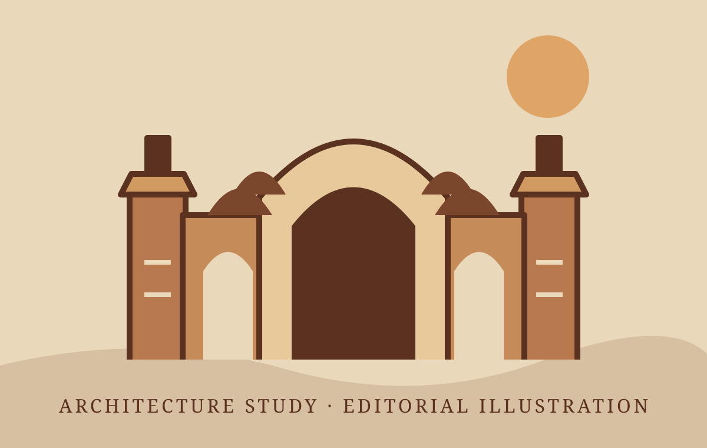
Rani Rupmati Mosque: A Respectful Architecture Guide to Ahmedabad’s Mirzapur Landmark
Understand Rani Rupmati Mosque through its Gujarat Sultanate architecture, carved details and a practical, respectful way to observe the Mirzapur monument.
Read the story →Beyond Soch editorial illustration · Labelled in storyKochrab Ashram: A Grounded Guide to Gandhi’s First Ahmedabad Ashram
Explore Kochrab Ashram’s place in Ahmedabad history, what the heritage record documents and how to plan a quiet, source-led visit.
Read the story →Beyond Soch editorial illustration · Labelled in storyLilo Chevdo: A Practical Guide to Vadodara’s Fresh, Crunchy Snack
Learn what makes lilo chevdo different, how its potato, chana dal and lemon balance works, and what to ask when ordering or carrying it home.
Read the story →Beyond Soch editorial illustration · Labelled in story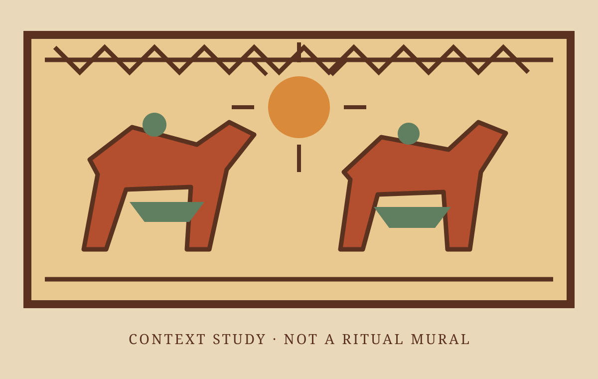
Pithora Painting: A Respectful Guide to Context, Craft and Buying
Understand Pithora painting’s ritual context in eastern Gujarat and use a practical checklist to buy contemporary work with respect and attribution.
Read the story →Beyond Soch editorial illustration · Labelled in story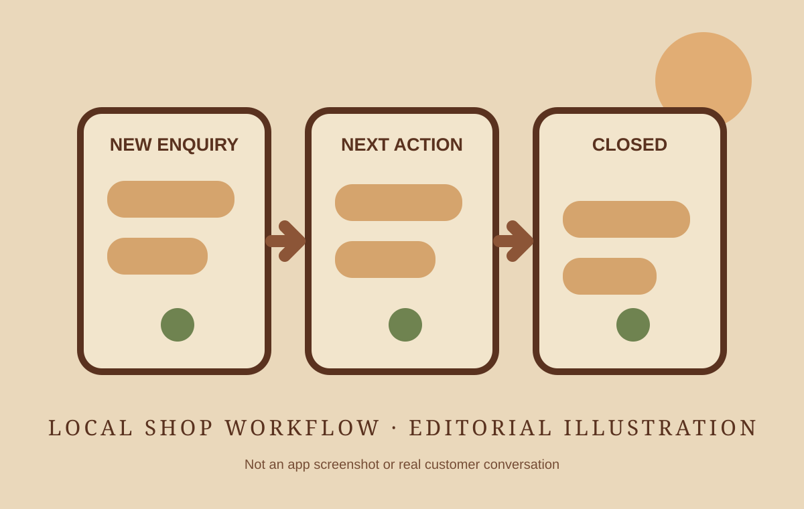
WhatsApp Business Quick Replies and Labels: A Simple Local-Shop Workflow
Set up accurate quick replies and a practical chat-label workflow for a local business without sounding robotic or losing customer context.
Read the story →Beyond Soch editorial illustration · Labelled in story
Badshah no Haziro: A Respectful Guide to Ahmedabad’s Royal Mausoleum
Understand Badshah no Haziro’s architecture and sacred character, with a practical plan for observing, photographing and visiting respectfully.
Read the story →Photo: Aksi great, Dipan Shukla · CC BY-SA 3.0 · Full credit in story
Fernandes Bridge Book Market: How to Explore Ahmedabad’s Reading Landmark
Explore the history and book-buying experience around Fernandes Bridge with practical checks for editions, condition, seller consent and nearby heritage.
Read the story →Beyond Soch editorial illustration · Labelled in story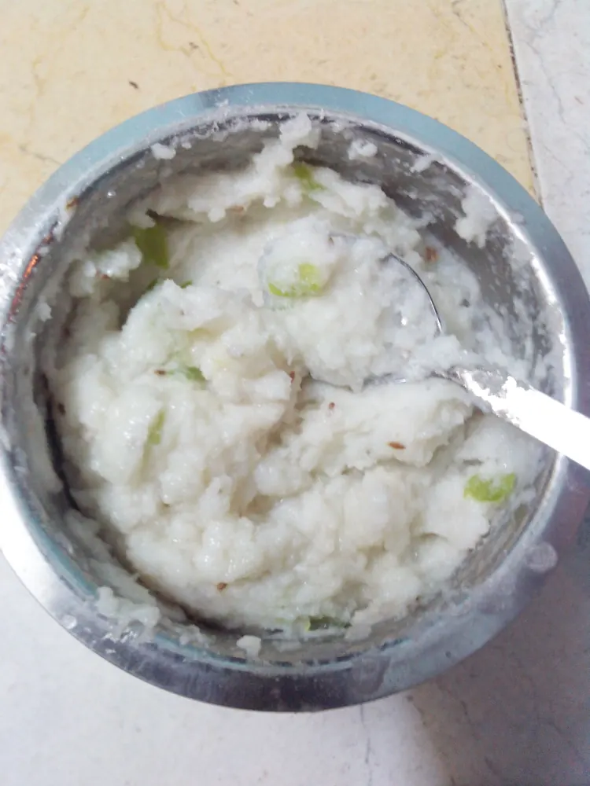
Khichu: A First-Timer’s Guide to Gujarat’s Warm Rice-Flour Snack
Learn what khichu is, how its soft texture and seasoning work, what to ask when ordering, and how to distinguish it from similarly named dishes.
Read the story →Photo: Nizil Shah · CC BY-SA 4.0 · Full credit in story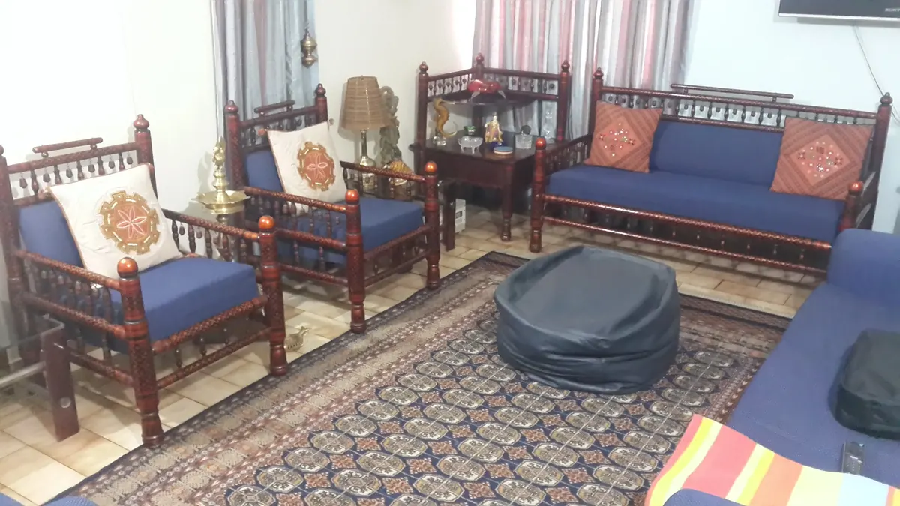
Sankheda Furniture: A Buyer’s Guide to Gujarat’s Lacquered Woodcraft
Recognise Sankheda furniture’s turned forms and painted lacquer work, ask better provenance questions, and plan transport, placement and care responsibly.
Read the story →Photo: Nvvchar · CC BY-SA 4.0 · Full credit in story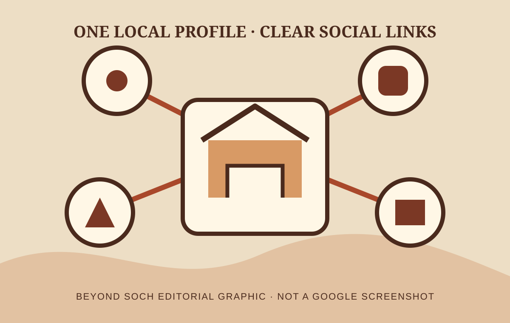
Google Business Profile Social Links: A Checklist for Local Brands
Add and audit social links on a Google Business Profile using correct URLs, consistent branding and a practical verification checklist for local businesses.
Read the story →Beyond Soch editorial illustration · Labelled in story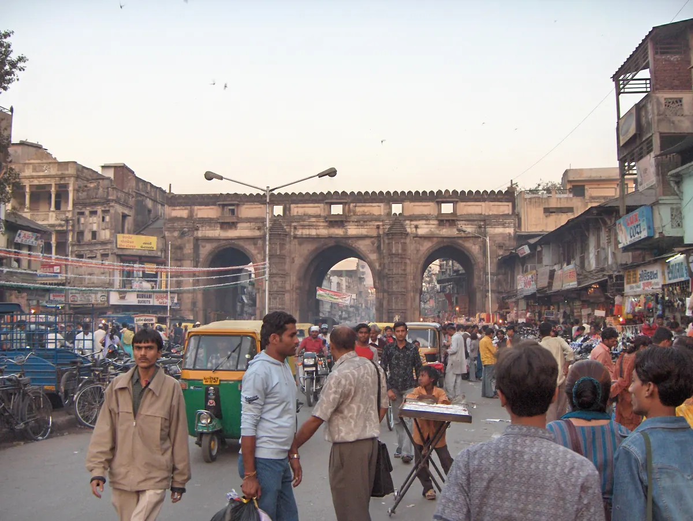
Teen Darwaza: A Practical Walking Guide to Ahmedabad’s Historic Gateway
Understand Teen Darwaza’s place in Ahmedabad’s old city and use a respectful, observation-first plan for exploring the surrounding heritage streets.
Read the story →Photo: No machine-readable author provided. Nichalp assumed (based on copyright claims). · CC BY-SA 2.5 · Full credit in story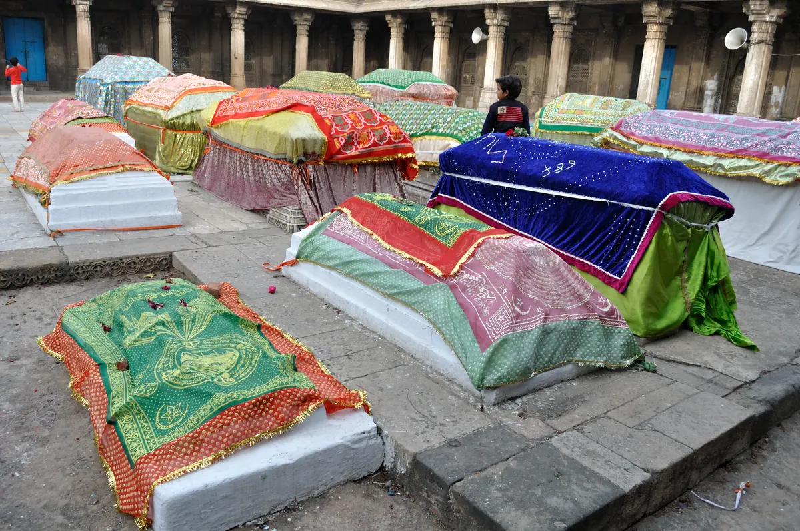
Rani no Haziro: A Respectful Guide to Heritage and Market Life
Plan an observation-led visit to Rani no Haziro, balancing Ahmedabad’s royal heritage, active market life, photography ethics and local shopping.
Read the story →Photo: Dey.sandip · CC BY-SA 4.0 · Full credit in story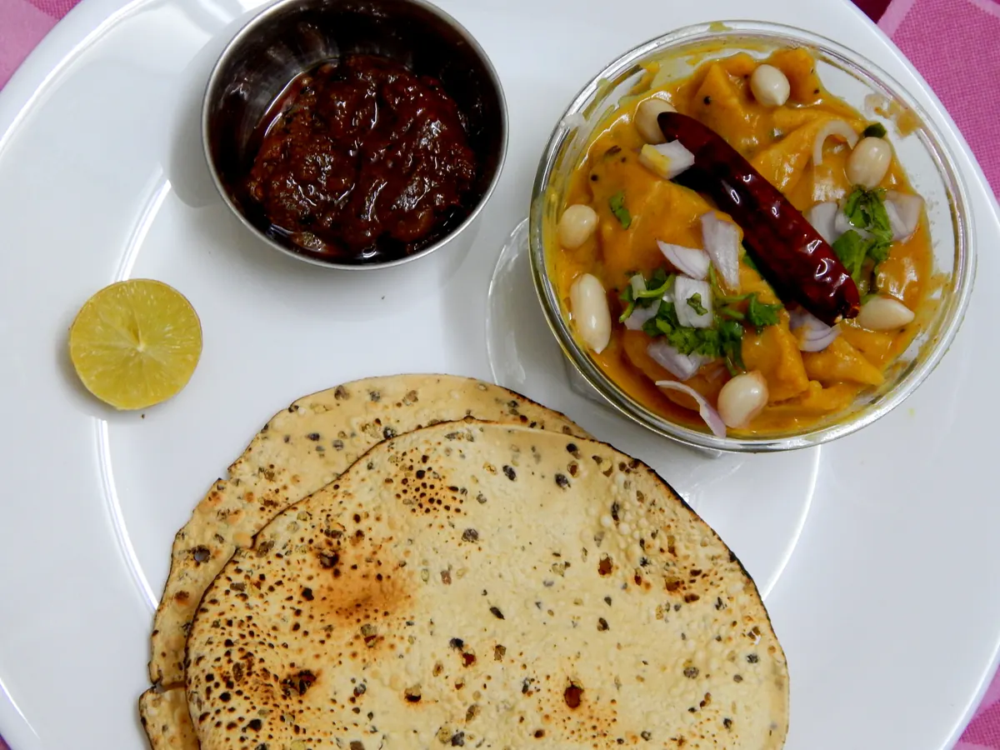
Dal Dhokli: A First-Timer’s Guide to Gujarati Comfort Food
Learn what dal dhokli is, how Gujarati versions balance texture and flavour, what to ask when ordering, and how to describe the dish accurately.
Read the story →Photo: Kanikatwl · CC BY-SA 4.0 · Full credit in story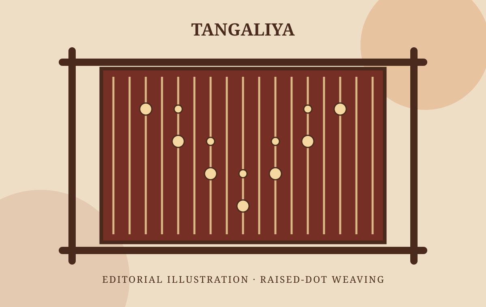
Tangaliya Weaving: How to Read and Buy Gujarat’s Dotted Textile Craft
Understand Tangaliya’s raised-dot weaving language, Surendranagar roots and the practical questions that help buyers support makers responsibly.
Read the story →Beyond Soch editorial illustration · Labelled in story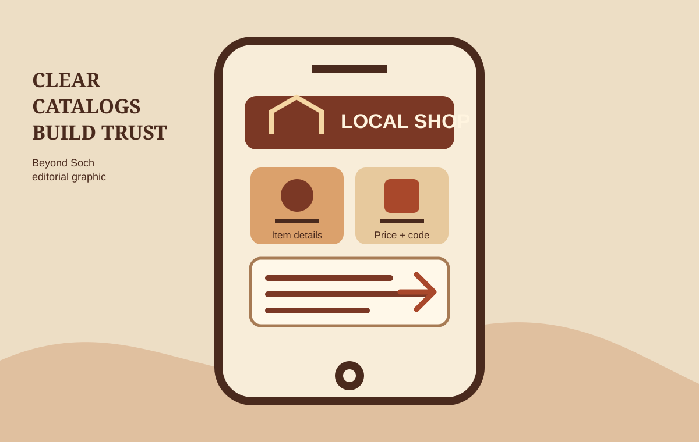
WhatsApp Business Catalog: A Practical Setup Guide for Local Shops
Turn a WhatsApp Business catalog into a clear mobile storefront with accurate photos, product details, collections, sharing links and a simple upkeep routine.
Read the story →Beyond Soch editorial illustration · Labelled in story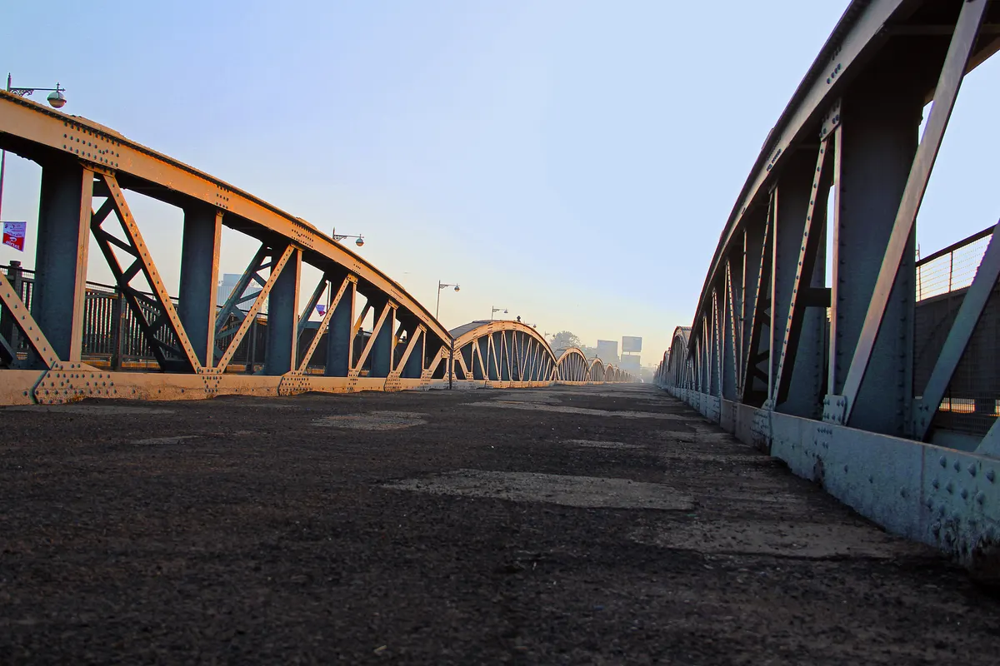
Ellis Bridge: Reading Ahmedabad’s East–West Urban Story
Use Ellis Bridge to understand Ahmedabad’s expansion across the Sabarmati, with a safe architecture-viewing and photography plan grounded in municipal heritage records.
Read the story →Photo: Glitterchirag · CC BY-SA 3.0 · Full credit in story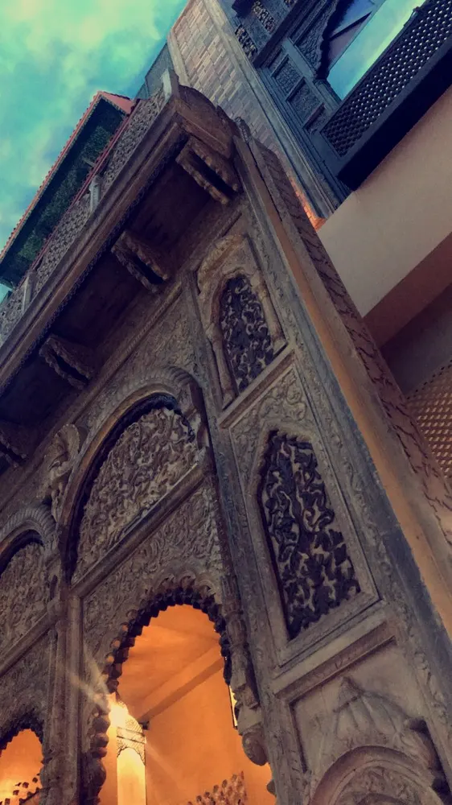
Shantinathji ni Pol and Derasar: A Respectful Heritage Guide
Understand Shantinathji ni Pol as a living residential area and its Jain derasar as an active sacred site, with clear guidance on observation, consent and captions.
Read the story →Photo: Yash parmar123 · CC BY-SA 4.0 · Full credit in story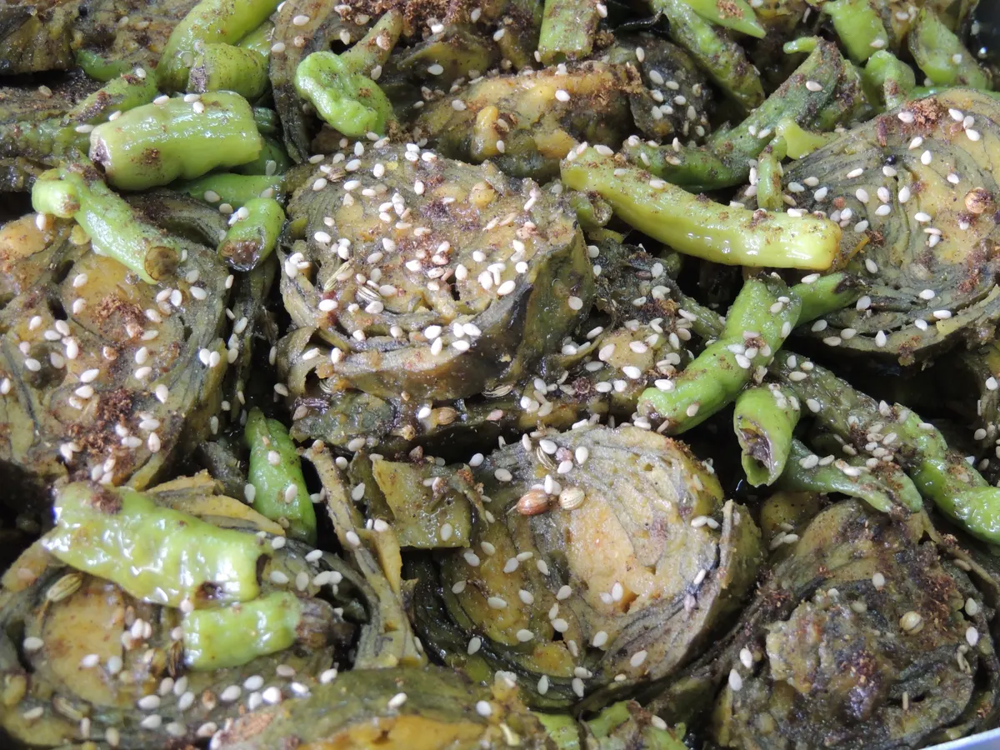
Patra: A Gujarati Snack Guide to Leaves, Layers and Texture
Learn how Gujarati patra is layered, steamed and sliced, what its accompaniments add and which allergy and takeaway questions to ask before ordering.
Read the story →Photo: Saurinjoshi · CC BY-SA 4.0 · Full credit in storyKachchh Metal Bells: A Buyer’s Guide to Sound, Form and Maker Credit
Explore Kachchh metal-bell craft through sound, shaping, finish and provenance questions, while giving makers clear credit in purchases and creator collaborations.
Read the story →Photo: Dheer443 · CC BY-SA 4.0 · Full credit in story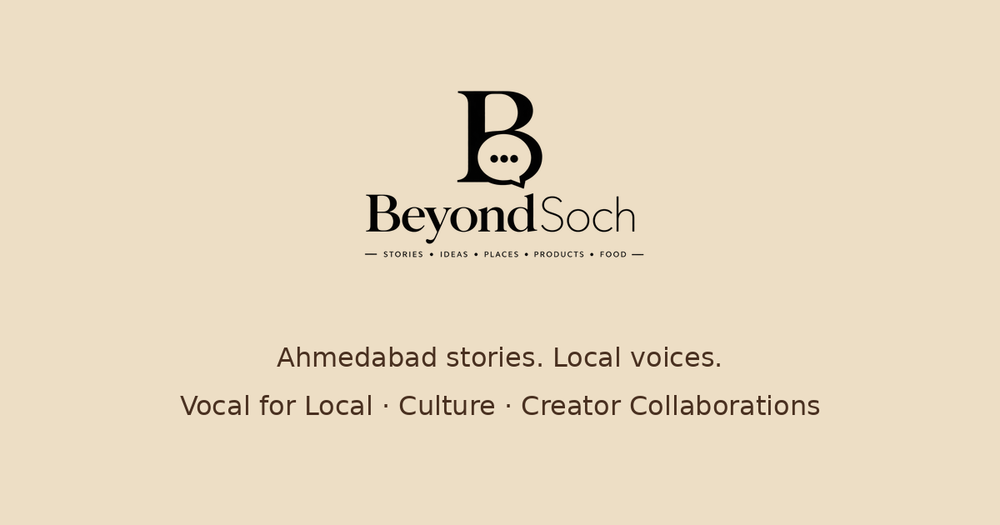
Google Review Requests: A Policy-Safe Guide for Local Businesses
Create a Google review link or QR-code workflow that asks genuine customers for honest feedback without discounts, gifts, pressure or selective review manipulation.
Read the story →
Swaminarayan Mandir Kalupur: A Respectful Architecture Guide
Plan a respectful visit to Ahmedabad’s historic Swaminarayan Mandir Kalupur, with an evidence-led guide to its ensemble, colour, carving and worship context.
Read the story →Photo: Pk Pratham ( Pratik Patel ) · CC BY-SA 4.0 · Full credit in story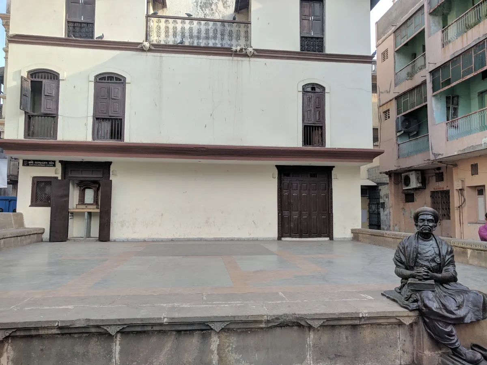
Kavi Dalpatram Chowk: A Literary Stop on Ahmedabad’s Heritage Walk
Understand Kavi Dalpatram Chowk as a literary memorial, an open square and a reconstructed house context on Ahmedabad’s heritage walk.
Read the story →Photo: Ramesh lalwani · CC BY-SA 4.0 · Full credit in story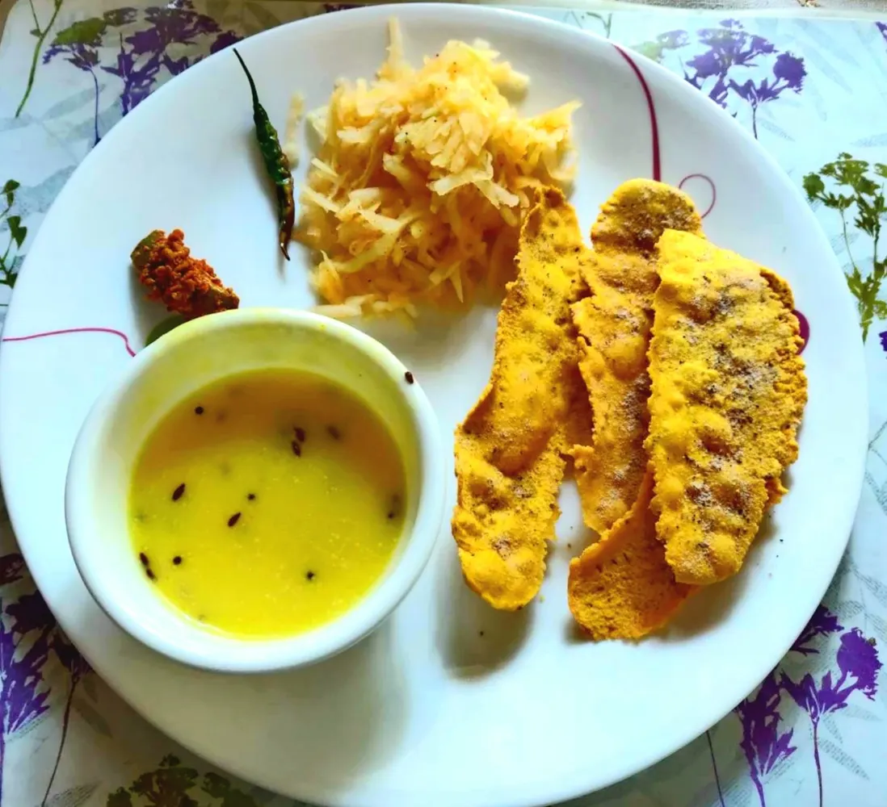
Fafda: A Gujarati Breakfast Guide for First-Time Diners
Learn what fafda is made from, how its accompaniments change the bite and what to ask a local vendor before ordering this Gujarati breakfast favourite.
Read the story →Photo: Drmoumitade · CC BY-SA 4.0 · Full credit in story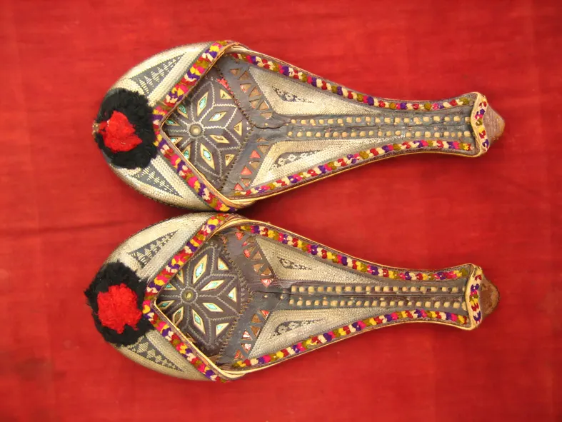
Kachchh Leather Craft: A Buyer’s Guide to Material and Provenance
Explore Kachchh leather craft through material, stitching, maker identity and care questions, while distinguishing historic examples from contemporary products.
Read the story →Photo: Meena Kadri · CC BY 2.0 · Full credit in storyInstagram Collab Reels: A Workflow for Local Brands and Creators
Use a clear pre-publish workflow for Instagram Collab reels, covering original authorship, collaborator acceptance, approvals, disclosures and post-launch records.
Read the story →
Jhulta Minara, Ahmedabad: An Architecture-First Viewing Guide
See Ahmedabad’s Jhulta Minara with an evidence-led guide to its carved balconies, sandstone structure, viewing angles and responsible heritage photography.
Read the story →Photo: Coolbreeze9182 · CC BY-SA 4.0 · Full credit in story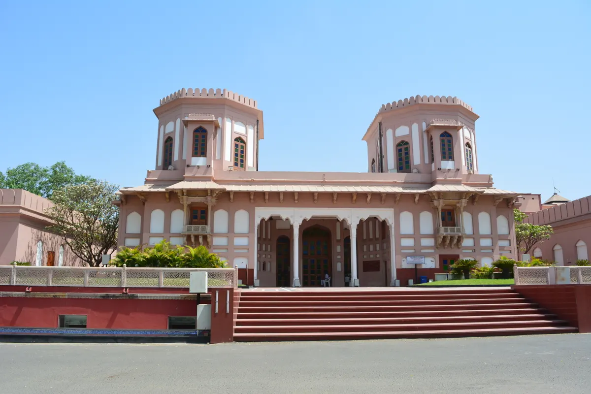
Sardar Patel National Memorial: A Thoughtful Ahmedabad Museum Guide
Plan a focused visit to Ahmedabad’s Sardar Vallabhbhai Patel National Memorial, with a respectful museum-reading method and practical documentation checklist.
Read the story →Photo: Omshakthitt · CC BY-SA 4.0 · Full credit in story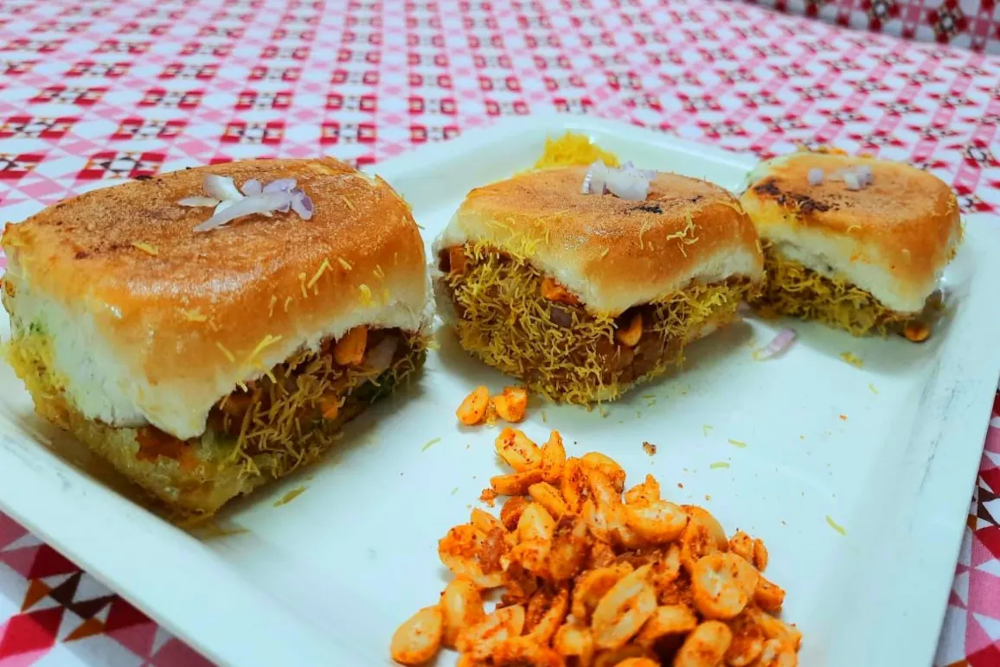
Kutchi Dabeli: A First-Time Ordering and Tasting Guide
Understand Kutchi dabeli’s potato filling, chutneys and garnishes, then order and describe this Gujarati snack with useful allergy and vendor questions.
Read the story →Photo: Sushant savla · CC BY-SA 4.0 · Full credit in story
Kachchh Embroidery: A Buyer’s Guide to Community, Stitch and Provenance
Learn why Kachchh embroidery is not one single style and use respectful questions about community, materials, maker identity and product care before buying.
Read the story →Photo: Fewword · CC BY-SA 4.0 · Full credit in storyGoogle Business Profile Photos: A Practical Plan for Local Businesses
Build a truthful, useful Google Business Profile photo set for a local shop, café or service business using Google’s current quality and category guidance.
Read the story →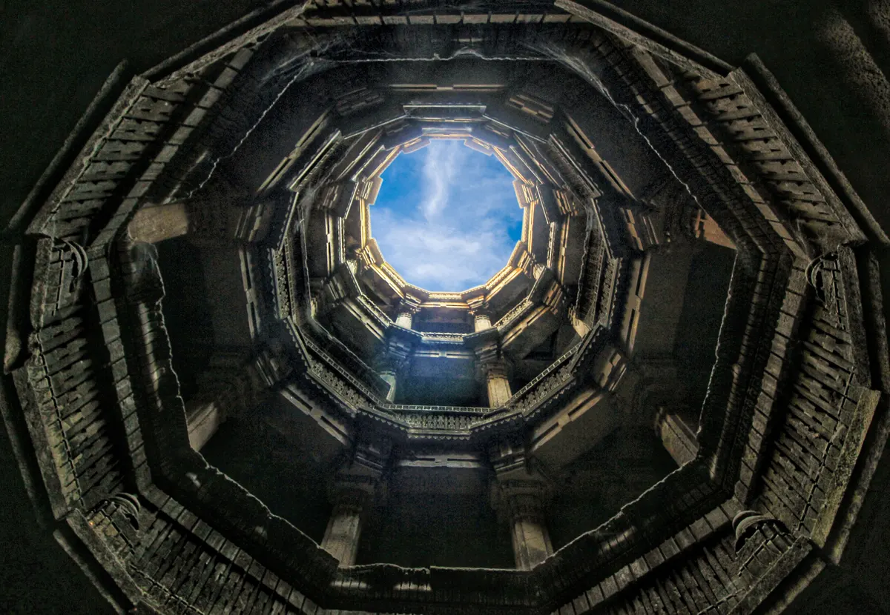
Dada Harir Stepwell: A Respectful Architecture Guide for Ahmedabad
Plan a thoughtful visit to Dada Harir Stepwell in Asarwa, with a clear reading order for its structure, inscriptions, light and shared heritage complex.
Read the story →Photo: Dr. Amit Patel · CC BY-SA 4.0 · Full credit in story
Modhera Sun Temple from Ahmedabad: A Structure-First Day-Trip Guide
Understand Modhera Sun Temple through the Surya Kund, Sabha Mandap and shrine, then plan a careful Ahmedabad day trip without relying on outdated timings.
Read the story →Photo: Harshvardhan Rajpurohit · CC BY-SA 4.0 · Full credit in story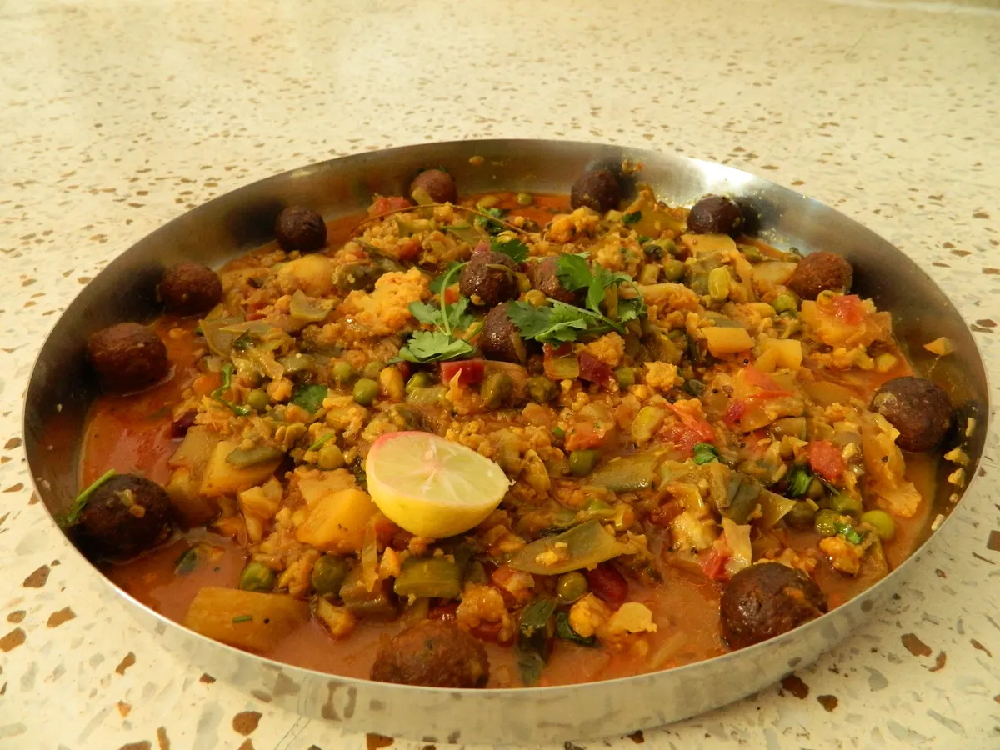
Undhiyu: A Gujarati Winter Dish Guide for Curious First-Time Diners
Learn what makes undhiyu a seasonal Gujarati dish, how styles vary, what to ask before ordering and how to describe it without flattening local food traditions.
Read the story →Photo: Jatan1992 · CC BY-SA 4.0 · Full credit in story
Ajrakh Block Printing: A Buyer’s Guide to Process, Pattern and Provenance
Understand Ajrakh’s multi-stage block-printing process and use practical provenance questions when buying textiles connected to Kachchh makers.
Read the story →Photo: SMarndi · CC BY-SA 4.0 · Full credit in storyLocal Brand × Creator Collaborations: An India Disclosure Checklist
A practical pre-publication checklist for Indian local brands and creators covering material connections, visible ad labels, factual claims and approval records.
Read the story →
Rani Sipri’s Mosque: A Closer Look at Ahmedabad’s Carved Stonework
Understand the mosque and tomb ensemble near Astodia Gate, then use a focused observation plan to appreciate Rani Sipri’s carved stonework respectfully.
Read the story →Photo: Shahabuddin Shaikh · CC BY-SA 4.0 · Full credit in story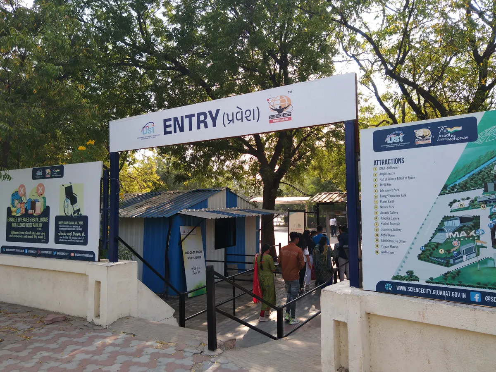
Gujarat Science City With Family: Choose a Gallery, Not a Checklist
Plan a focused family visit to Gujarat Science City by choosing a learning theme, checking attraction-specific bookings and leaving time for questions and breaks.
Read the story →Photo: Nizil Shah · CC BY-SA 4.0 · Full credit in story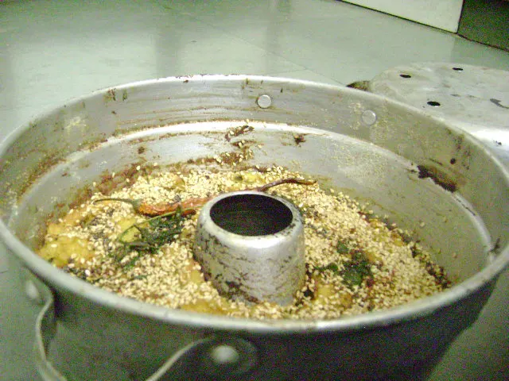
Handvo: Understanding Gujarat’s Savoury Cake Through Texture and Ingredients
Get to know handvo through its rice-and-lentil base, vegetable variations and contrasting textures, with a useful approach to asking about a local kitchen’s version.
Read the story →Photo: Noopur28 · CC0 · Full credit in story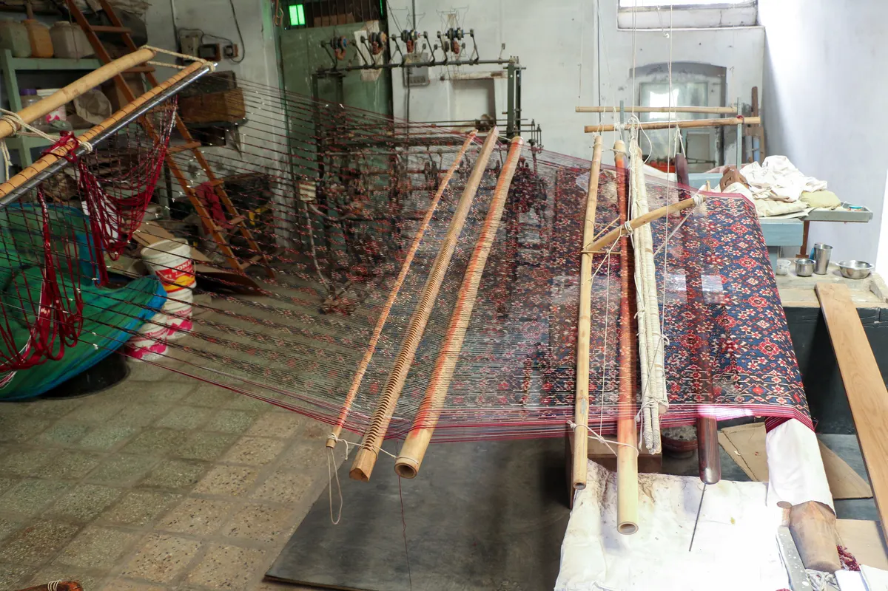
Patan Patola Explained: Why the Pattern Begins Before the Weaving
Understand Patan Patola’s double-ikat process, distinguish the making method from a similar-looking print and prepare clearer questions when exploring Gujarati textiles.
Read the story →Photo: Bernard Gagnon · CC BY-SA 3.0 · Full credit in storyFive Product Photos a Local Shop Can Prepare Before Its Next Promotion
Prepare a five-photo product set that answers customer questions about contents, size, details, variants and packaging before promoting an Ahmedabad business online.
Read the story →Sarkhej Roza: Courtyards, Jalis and a Slower Ahmedabad Visit
Explore Sarkhej Roza through its courtyards, stone screens and relationship with water, with a respectful plan for an architecture-focused Ahmedabad visit.
Read the story →Photo: JaySuthar97 · CC BY-SA 4.0 · Full credit in story
Vechaar Utensils Museum: Discovering Everyday Design in Ahmedabad
Look at everyday vessels as design at Ahmedabad’s Vechaar Utensils Museum, with observation prompts, a family activity and practical visit-planning questions.
Read the story →Photo: KHC Khushtar Heritage · CC BY-SA 4.0 · Full credit in story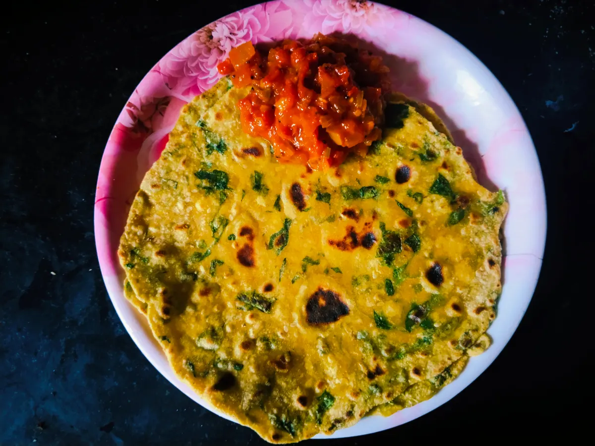
Thepla Beyond the Snack Box: A Guide to Ordering This Gujarati Flatbread
Understand thepla’s common ingredients and variations, then prepare a clear local order covering quantity, accompaniments, collection and seller instructions.
Read the story →Photo: Yakshitha · CC BY-SA 4.0 · Full credit in story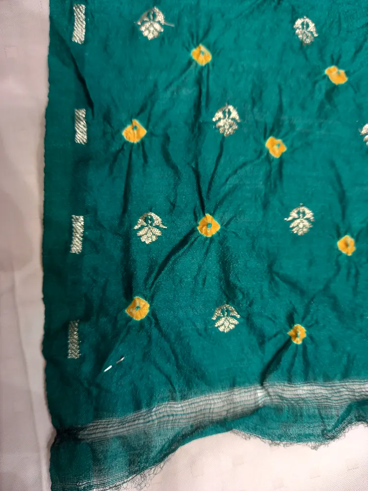
Bandhani: Look Beyond the Dots When Buying Gujarati Tie-Dye
Understand Bandhani’s tie-dye process and ask clearer questions about fabric, making, colour, finishing and attribution when shopping for Gujarati textiles.
Read the story →Photo: Ramkumar Kalyani · CC BY-SA 4.0 · Full credit in storyA Three-Minute Local-Maker Interview: Five Questions That Reveal the Work
Plan a focused three-minute maker interview with original questions, a suggested edit structure, factual checks and an honest approach to sponsored features.
Read the story →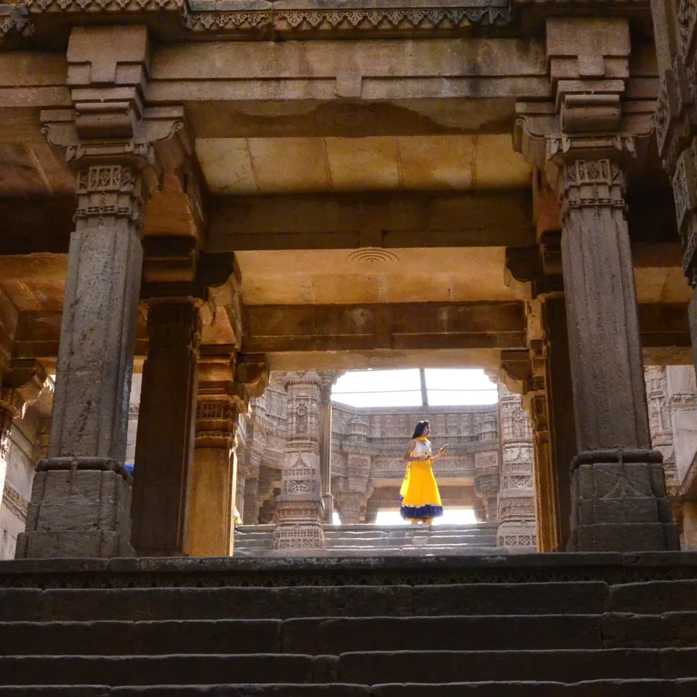
Adalaj Stepwell: Reading the Architecture on a Day Trip from Ahmedabad
Explore Adalaj Stepwell’s landings, light and carved stonework, with a practical plan for an architecture-focused outing from Ahmedabad.
Read the story →Photo: Naman · CC BY-SA 4.0 · Full credit in story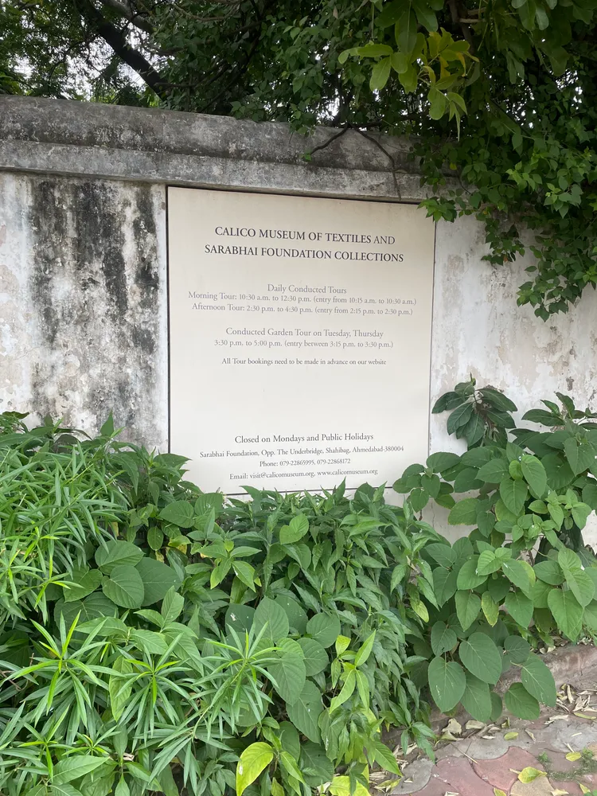
Calico Museum of Textiles: How to Prepare for an Ahmedabad Museum Visit
Prepare for the Calico Museum of Textiles with booking questions, an observation checklist and a thoughtful way to explore Ahmedabad’s textile heritage.
Read the story →Photo: 新しい年に向けて · CC0 · Full credit in story
Mata ni Pachedi: Understanding the Craft Before You Buy
Understand Mata ni Pachedi’s sacred textile context and prepare useful questions about technique, maker attribution, commissions and care before buying.
Read the story →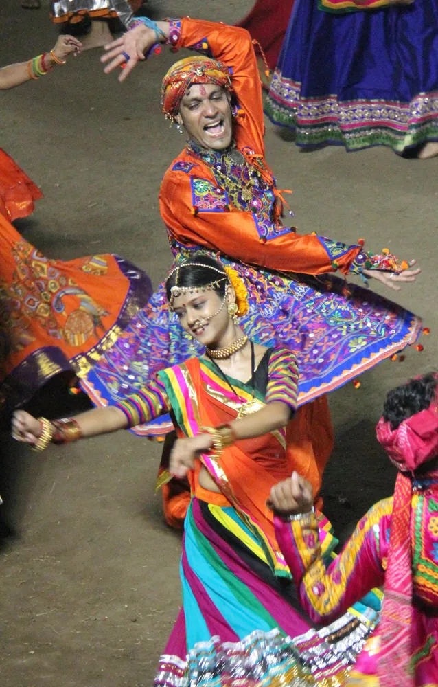
Garba of Gujarat: A First-Time Participant’s Guide Beyond the Reel
Understand Garba’s community and devotional context, prepare for your first session and join respectfully without treating the gathering only as content.
Read the story →Photo: AKS.9955 · CC BY-SA 4.0 · Full credit in story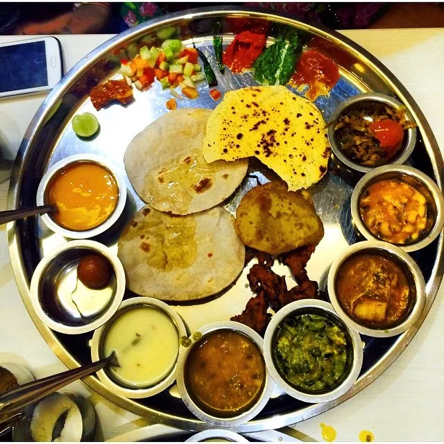
Gujarati Thali: How to Order, Taste and Avoid Wasting a Good Meal
Understand a Gujarati thali’s main components and ask about portions, refills, ingredients and the bill before choosing a meal in Ahmedabad.
Read the story →Photo: mihirs2007 · CC BY-SA 4.0 · Full credit in story
Ahmedabad Heritage Walk: Pols, Courtyards and a Route That Makes Sense
Understand Ahmedabad’s official heritage walk route, what to notice in its pols and how to prepare for a morning exploring the living Old City.
Read the story →Patang Re-Evolve: What to Know Before Booking Ahmedabad’s Revolving Restaurant
Explore Patang Re-Evolve’s chabutaro-inspired identity and use a clear booking checklist for a meal at Ahmedabad’s revolving restaurant.
Read the story →
Buying Khadi in Ahmedabad: A Practical Fabric and Care Checklist
Ask better questions when buying khadi in Ahmedabad, from spinning and weaving to fibre, fit, washing instructions and the story behind the cloth.
Read the story →Khaman and Khandvi: Ordering Gujarati Farsan With Confidence
Learn the difference between khaman and khandvi, then plan a Gujarati farsan order with sensible portions, ingredient questions and takeaway checks.
Read the story →A Local Business Reel Brief: What to Prepare Before a Creator Shoot
Prepare a useful reel brief for your Ahmedabad business: one clear offer, verified facts, a simple shot list, approvals and a realistic way to assess enquiries.
Read the story →Sabarmati Ashram: A Thoughtful Guide to the Museum and Its Stories
Explore Sabarmati Ashram through its museum, official digital guide and historical spaces, with practical advice for a thoughtful Ahmedabad visit.
Read the story →Sidi Saiyyed Mosque: How to Appreciate Ahmedabad’s Famous Jali
Understand the tree-pattern stone jali at Sidi Saiyyed Mosque, plan a respectful visit and photograph architectural detail without disrupting worship.
Read the story →Kankaria Lake With Family: Plan the Outing Before the Attractions
Plan a manageable family outing at Kankaria Lake with activity choices, meeting points, a flexible budget and checks for current attraction availability.
Read the story →
Hutheesing Jain Temple: Marble Craft, Context and Visitor Etiquette
Explore the marble craftsmanship of Hutheesing Jain Temple, understand its religious setting and plan a respectful architecture-focused visit.
Read the story →Manek Chowk Food Walk: A First-Time Visitor’s Planning Guide
Plan a Manek Chowk food outing with a realistic tasting budget, dietary questions, meeting points and respectful ways to feature local vendors.
Read the story →
Atal Bridge Ahmedabad: Design, River Views and Visit Planning
Discover Atal Bridge’s kite-inspired design, plan a riverfront outing and learn what to check before visiting this Ahmedabad landmark.
Read the story →Sabarmati Riverfront: How to Plan a Relaxed Ahmedabad Evening
Plan a simple Sabarmati Riverfront outing with route choices, practical preparation, photography ideas and thoughtful use of public space.
Read the story →Jama Masjid Ahmedabad: Architecture, History and Respectful Visiting
An introduction to Jama Masjid Ahmedabad, its historic architecture and practical ways to plan a respectful Old City visit.
Read the story →
Bhadra Fort and Teen Darwaza: Exploring Ahmedabad’s Old City
Explore the connection between Bhadra Fort, Teen Darwaza and Ahmedabad’s historic centre with a practical, respectful walking approach.
Read the story →Vocal for Local in Ahmedabad: Practical Ways to Support Small Businesses
Support Ahmedabad’s local businesses through thoughtful purchases, useful recommendations and honest creator collaborations.
Read the story →